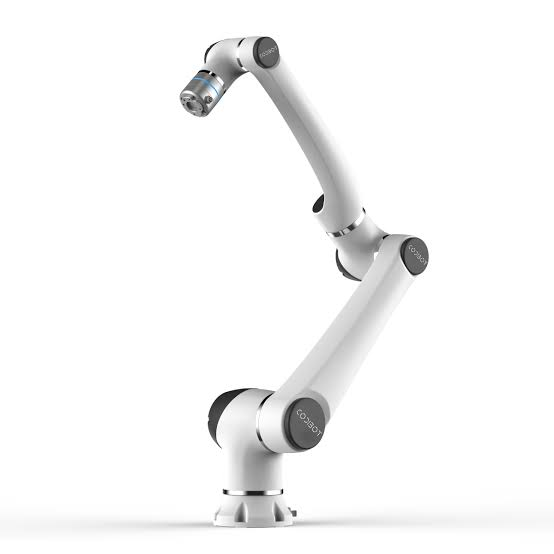
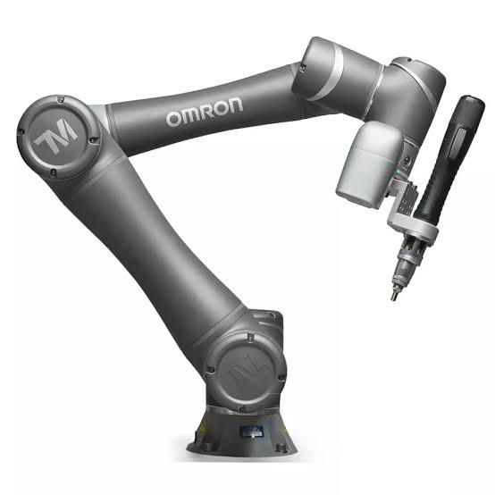
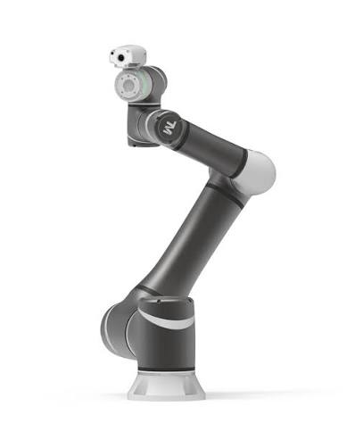
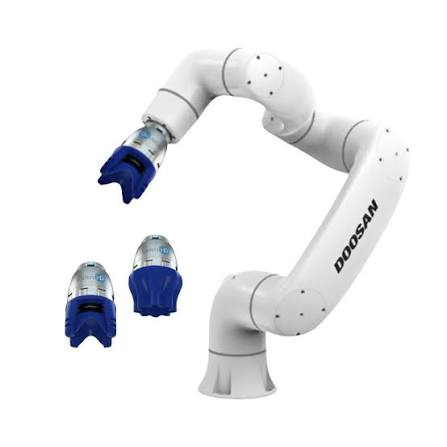
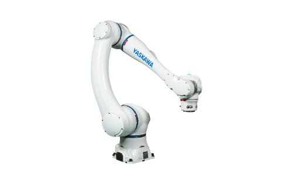

O robô colaborativo é um tipo de robô industrial caracterizado por sua capacidade de trabalhar em colaboração com pessoas, sem a necessidade de grades de proteção. Equipado com sensores inteligentes e sistemas avançados de segurança, o robô colaborativo é capaz de detectar contatos e limitar sua força e velocidade quando necessário, proporcionando um ambiente de trabalho mais seguro.


O robô colaborativo, também conhecido como cobot, é um manipulador industrial desenvolvido para trabalhar de forma segura ao lado dos operadores humanos, sem a necessidade de grades de proteção em diversas aplicações. Equipado com sensores inteligentes e sistemas avançados de segurança, o robô colaborativo é capaz de detectar contatos e limitar sua força e velocidade quando necessário, proporcionando um ambiente de trabalho mais seguro. Sua flexibilidade e facilidade de programação permitem sua utilização em tarefas como montagem, inspeção, Pick and Place, aparafusamento, embalagem e manipulação de materiais. Além disso, os cobots podem ser integrados às tecnologias da Indústria 4.0, conectando-se a sistemas de monitoramento, visão computacional e inteligência artificial para aumentar a produtividade e otimizar os processos industriais.
Empresas especializadas em automação industrial desenvolvem robôs colaborativos para aplicações que exigem segurança, flexibilidade e facilidade de integração. Esses equipamentos são amplamente utilizados em processos de montagem, inspeção, manipulação de materiais, embalagem e sistemas Pick and Place, trabalhando lado a lado com operadores humanos.

A Techman Robot é reconhecida por seus robôs colaborativos com sistemas de visão artificial integrados, oferecendo soluções para inspeção, montagem, manipulação de materiais e automação inteligente com alta precisão e facilidade de programação.

A Doosan Robotics desenvolve robôs colaborativos modernos e versáteis, projetados para operar com segurança ao lado de pessoas em aplicações como montagem, paletização, soldagem, inspeção e manuseio de materiais.

A Yaskawa oferece robôs colaborativos da linha MOTOMAN HC, combinando tecnologia de segurança, alta confiabilidade e precisão para aplicações de montagem, alimentação de máquinas, inspeção e automação industrial colaborativa.